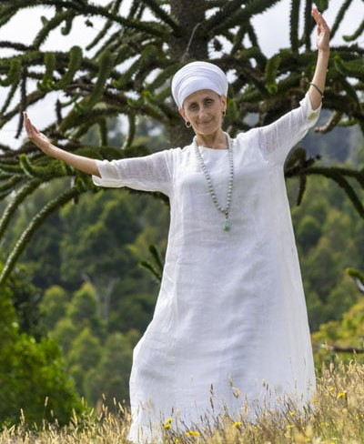

Hola, mi nombre es Amanda Henriquez, y mi nombre espiritual es Amrit Vela Kaur. Soy instructora de Kundalini Yoga graduada y formada por Nam Nidhan Kaur Khalsa. En este momento me encuentro especializandome en Trauma y Espiritualidad con Gurujodha Singh.
Desde muy pequeña sentí una muy bella conexión hacia lo espiritual, en especial con la Madre María, lo que me llevó durate mi vida a una busqueda tanto externa como interna, de una forma de vivir, de sentirar y respirar la espiritualidad. Fué así como llegué al Kundalini Yoga, que es una forma de contectar conmigo y de ese estado de plenitud a conectar con Dios y su amor.
Habiendo sido profesora en el rubro gastronomico y sintiendo vocación en la enseñanza, es que decidí poder llevar a toda aquella persona que lo quiera, esta herramienta para que trabajada con disiplina y dedicación, también pueda encaminarse hacia la libertad del alma.
Gurujodha Singh
Nam Nidhan Kaur Khals